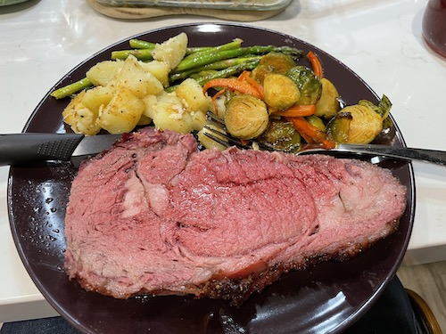

Smoked Prime Rib

Smoked prime rib shown with roasted potatoes, brussels sprouts and asparagus.
Description
This prime rib recipe is a foolproof method of getting perfectly cooked wall-to-wall medium rare and a smoky and crisp exterior.
It is based on Alton Brown's Standing Rib Roast recipe
and has been adapted to use a outdoor smoker.
Makes an excellent celebration meal for the holidays.
Serves 6-8
Equipment Needed
- Offset, pellet, or electric smoker
- Probe thermometer
- Quarter-size sheet pan
- Wire rack
- Cheese cloth
Ingredients
- Bone-in Rib Roast with 3-4 bones (Choice grade is fine if you can't find Prime)
- 2 Tbsp Diamond Crystal Kosher salt or 1 Tbsp table salt
- 2 Tbsp fresh-ground black pepper
- 1 Tbsp neutral oil (do not use olive oil)
- Cheese cloth
Preparation
- Trim excess fat, score a cross-hatch pattern in the fat cap
- Coat with oil, season liberally with salt and pepper
- Cover in cheese cloth, place on a wire rack in a sheet pan and refrigerate for up to 1 week
Instructions
- Preheat smoker to 250 F
- Smoke directly on the grates rib side down fat cap up until interior hits 118 F (use a probe thermometer)
- If baking in oven, use a roasting pan with wire rack
- Pull the roast, tent with foil and preheat oven or smoker to 500 F (center will continue to rise in temp as it rests)
- After the roast has rested at least 30 minutes and the smoker or over is to temp, return the roast to the smoker uncovered until the exterior browns deeply, 10-15 minutes.
- Serve immediately
- Carefully cut the bones from the bottom of the roast and save those for the chef's leftovers.
- Slice generous portions, it's a special occasion after all
Notes
- Serve with freshly prepared horseradish sauce, roasted greens and potatoes
- If you have guests that prefer not to eat beef medium-rare, consider uninviting them from your celebration.